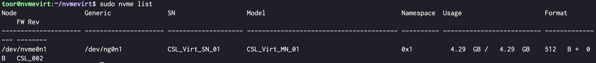
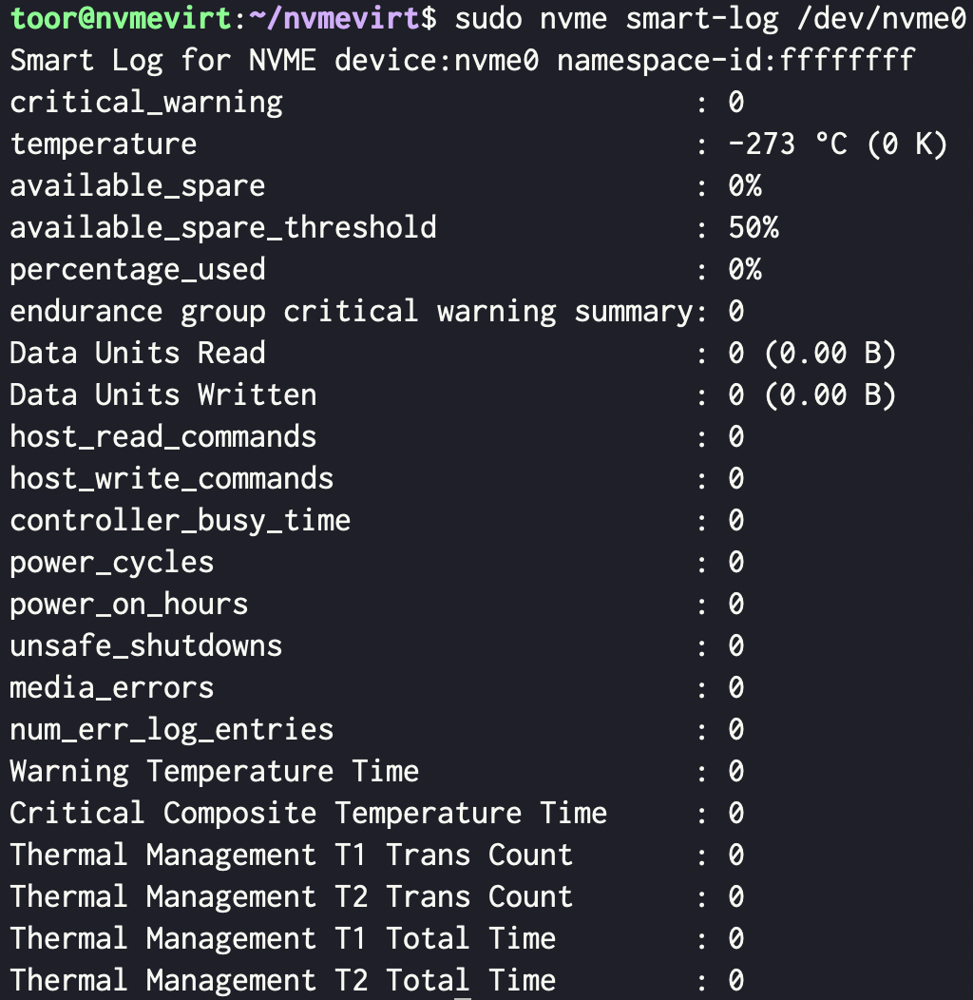

참고한 것들
환경
- VM 정보
- CPU: 4C
- MEM: 8G
- NIC:
10.0.0.100/24 - Disk: 32G
- VM Provider: Libvirt (QEMU)
- OS 정보
- Kernel:
5.15.0-94-generic - Distro: Ubuntu 22.05 Jammy
- Kernel:
NVMeVirt 설치
설치 결과
- NVMeVirt 설치 가이드
- Memmap_start:
4G - Memmap_size:
4G - CPUs:
2,3
- Memmap_start:
- 빌드할 때
gcc-12가 필요하다:
sudo apt-get install -y gcc-12- 그리고
make tags할 때 다음과 같은 애들이 필요하다:
sudo apt-get install -y cscope universal-ctagsTroubleshoot # 1: MEMMAP 에러
- 다음과 같은 에러 발생:

- Memmap_size 를
1G로 했더니 정상적으로 생성됨 - Memmap 설정 변경하며 최대로 늘릴 수 있는 size 가 얼마인지 확인
Info
chset.sh#!/bin/sh MEMMAP_START=$1 MEMMAP_SIZE=$2 sudo sed -Ei 's|^GRUB_CMDLINE_LINUX="memmap=(.+) intremap=off"$|GRUB_CMDLINE_LINUX="memmap='$MEMMAP_SIZE'G\\\\\\$'$MEMMAP_START'G intremap=off"|g' /etc/default/grub sudo update-grub cat << EOF > up.sh #!/bin/sh sudo insmod ./nvmev.ko memmap_start=${MEMMAP_START}G memmap_size=${MEMMAP_SIZE}G cpus=2,3 sudo journalctl -k --no-pager EOF sudo reboot
Info
up.sh#!/bin/sh sudo insmod ./nvmev.ko memmap_start=4G memmap_size=4G cpus=2,3 sudo journalctl -k --no-pager
- 결론:
MEMMAP_START=4G,MEMMAP_SIZE=4G로 결정 - 설치 결과
sudo journalctl -k
Troubleshoot # 2: Modprobe 설정
- Arch linux module 설정 가이드
- Module 적재 설정:
/etc/modules-load.d/nvmev.conf - Module 옵션 설정:
/etc/modprobe.d/nvmev.conf
- Module 적재 설정:
수정)
chset.sh#!/bin/sh MEMMAP_START=$1 MEMMAP_SIZE=$2 sudo sed -Ei 's|^GRUB_CMDLINE_LINUX="memmap=(.+) intremap=off"$|GRUB_CMDLINE_LINUX="memmap='$MEMMAP_SIZE'G\\\\\\$'$MEMMAP_START'G intremap=off"|g' /etc/default/grub sudo update-grub cat << EOF | sudo tee /etc/modules-load.d/nvmev.conf nvmev EOF cat << EOF | sudo tee /etc/modprobe.d/nvmev.conf options nvmev memmap_start=${MEMMAP_START}G memmap_size=${MEMMAP_SIZE}G cpus=2,3 EOF
Info
modprobe.sh#!/bin/bash DIRNAME=/home/toor/nvmevirt sudo mkdir -pv /lib/modules/$(uname -r)/misc sudo cp ${DIRNAME}/nvmev.ko /lib/modules/$(uname -r)/misc/ \ && sudo depmod -a
NVMe CLI
디버깅
간단히 몇개의 command 날려보기
sudo nvme list결과 예시

sudo nvme get-log /dev/nvme0 -i 2 -l 512결과 예시

- SMART log
sudo nvme smart-log /dev/nvme0결과 예시
